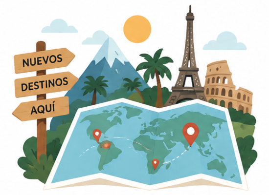
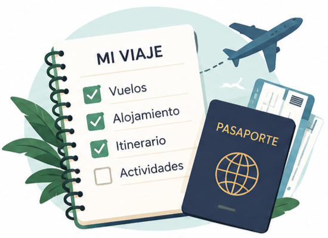
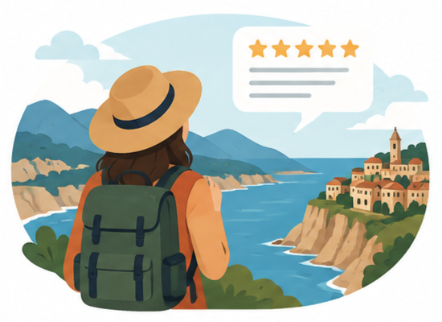
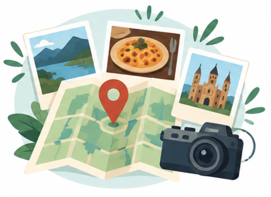

Destinos
Conoce lugares increíbles y encuentra información para elegir tu próximo destino.
Descubre nuevos destinos, encuentra inspiración para tus próximos viajes y conoce nuestras recomendaciones para vivir experiencias inolvidables alrededor del mundo.
En Tripdate compartimos destinos, consejos e itinerarios para ayudarte a organizar tu próxima aventura de una manera sencilla.

Conoce lugares increíbles y encuentra información para elegir tu próximo destino.
Encuentra recomendaciones, itinerarios y consejos prácticos para organizar tus viajes.
Descubre herramientas y recomendaciones que pueden ayudarte antes y durante cada viaje.



